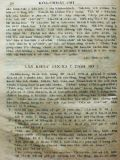

Languages
台文
｜
中文
｜
日本語
｜
English
字體
小
｜
中
｜
大
首頁
/
白話字數位典藏
白話字數位典藏全文檢索
查詢模式
選擇年代
清國時代(1885-1895)
日本時代(1895-1945)
戰後(1945-1969)
1885-1895
1896-1905
1906-1915
1916-1925
1926-1935
1936-1945
1946-1955
1956-1965
1966-1969
1970-1980
1980-1990
1990-2000
2000-2010
2010-
選擇文類
詩
散文
小說
戲劇
傳記
選擇作者
陳清忠
陳清義
編輯部
柯設偕
吳天命
明有德
偕叡廉
周天來
劉華義
王守勇
林茂生
陳添旺
柯維思
王占魁
賴仁聲
陳瓊琚
雪峰逸嵐
吳清鎰
郭水龍
蕭樂善
許水露
葉金木
陳金然
章王由
廖得
鄭連坤
潘道榮
楊士養
梁秀德
劉約翰
周淑慧
高金聲
林燕臣
黃六點
蔡愛義
許有才
主筆
巴克禮
陳鳩水
郭朝成
張基全
陳明清
陳能通
拾穗生
顏振聲
卓恆利
傳道局
胡文池
劉主安
鄭兒玉
郭和烈
上山生
郭希信
大橋流太郎
張金波
潘文才
陳溪圳
徐春生
吳牧師娘
劉牧師娘
陳芳本
楊世註
盧樹河
Google Search
Yahoo Search
全部
刊名
標題
標題(教羅)
全文
全文(教羅)
作者
第75頁，共108頁(共2,148筆資料) 0.6431188583374sec
1
...
73
74
75
76
77
...
108
To Page
GO
文字列表
圖文列表
排序
日期
文類
刊名
作者
影像
[1941-11 台灣教會公報/北部教會 文類-散文 作者-陳添旺/Tân Thiam-ōng]
活佛 [ oa̍h pu̍t ]
活佛 陳添旺寫 1941年11月680期 23 咱數念活活的上帝，實在是「活」--ê，因為伊所做的攏是活，雖罔大地死死嘛會震動，樹木花草生根也會發葉，顯明in有活。 會外人捌講，「某仙佛siàⁿ到會食飯」，是表明有靈感nā-tiāⁿ。 捌有大仙佛像空殼內面tiàm老鼠，就喊譁是活--ê，毋久家己to空殼，thái會活！查到詳細，是「活命鼠」，毋是活佛。 捌看這本冊，論一个某人，真誠心服事神佛，piàn四界廟門形香hē神明，求平安求福氣，求光明，捌到這位廟內安眠，受指點共伊講。你家內的「活佛」to毋服事，欲求甚物神佛mah？伊就問講，甚物是我家內的活佛mah？就共伊講...
[1941-12 台灣教會公報/北部教會 文類-散文 作者-郭和烈/Keh Hô-lia̍t]
迎接聖誕 [ Ngiâ-chih Sèng-tàn ]
迎接聖誕 郭和烈 1941年12月681期 17 救主聖誕到lah，全地面上的教會不論男女老幼，逐个攏真歡喜。主耶穌出世當時天使，天軍吟詩呵咾，顧羊的歸榮光呵咾上帝，東方的博士也「歡喜到袂顧得。」佇聖誕的時，囡仔歡喜賞品佮聖誕樹的媠，生理人歡喜聖誕大賣出的鬧熱，有人歡喜聖誕的送物，總是咱是歡喜「以馬內利」翻譯就是上帝佮咱佇teh。對以馬內利咱起頭才看著上帝本身。伊佇耶穌基督來揣咱，伊無要緊家己著佇卑微來可憐咱，為著欲替咱的罪受刑罰，差遣耶穌基督來到世間佮咱佇teh。這是咱最大的歡喜。用這款歡喜來迎接聖誕的人有福氣！ 咱的主耶穌基督出世當時有天使佮濟濟天兵呵咾上帝，有kut...
[1941-12 北部教會 文類-散文 作者-上山生/Siōng-san seng]
教會諸機關teh活動 [ Kàu-hoē chu ki-koan teh oa̍h-tāng ]
教會諸機關teh活動 上山生 1941年12月681期 19-20 宣教師已經轉去了，taⁿ咱的教會的諸機關怎樣teh活動。傳道局啥款？神學校啥款？馬偕醫館？欲對tó位通得著錢來維持chiah 的事業？咱的全教會teh關心teh掛慮。有人teh拍算宣教師敢有留寡現金通做幾若年的路用，亦teh拍算宣教師無偌久欲閣來，kan-ta掛慮這兩三年的事，kan-ta teh chip守舊時的事，看會閣倒轉佇舊時的狀態，攏無欲奮發來應今仔日的時勢。Kan-ta越頭看後面，無欲向前照上帝的恩賜，照上帝所共咱定著，所共咱安排的來換新進步。有人thiau-tî毋四正認識今仔日的時勢，四界宣傳...
[1941-12 台灣教會公報/北部教會 文類-散文 作者-黃六點/N̂g La̍k-tiám]
教會的練成 [ Kàu-hoē ê Liān-sêng ]
教會的練成 黃六點 1941年12月681期 20-24 今仔日的時代「練成的問題」，真對重有青年的練成，指導者的練成，宗教家的練成，相佮聚集佇一所在幾若日久受訓練。練成的問題通講是國民的再教育，指導者的再訓練，因為佇這个時國民著把握日本精神的精髓，來做一个無見笑的皇國民。向國家所囥的理想佮目標來進行，所以才著聚集chiah 的中心人物，chheng-chòng-chiá佇一所在來相佮食，相佮睏，相佮受教示，受造就得著liân-moâ人格。學堂，會社，團體，抑是保甲真對重勤勞奉事，也是欲涵養這款的精神，也這个是欲入佇新時代無袂用得的精神，因為舊的時代，舊有勢力佮思想te...
[1941-12 台灣教會公報/北部教會 文類-散文 作者-黃六點/N̂g La̍k-tiám]
內外的消息 [ Lāi-goā ê Siau-sit ]
內外的消息 黃六點 1941年12月681期 24-25 1. 新的傳教者欲入教界。本12月尾對日本神學校有徐謙信君佮林明理君欲卒業，穿錦伊轉來台灣。也對台北神學校有張豐昌君欲卒業，這3个有為的青年正月會受傳道局派遣佇教會來強化咱北部的傳道戰線。 2. 大村校長9月尾有去內地視察。11月3號閣倒轉來，伊去內地的時也有代學校要務去做工，佮彼爿的學校連絡。中間一項是交涉今年才新設的神學校高女部，連絡彼爿有資格受任考的女學。就是京都同志社女學，名古屋今生女學，東京Chu-iû學園，若咱遮4年卒業通去入in 的 5年，閣進步較懸的學校，這對咱教會的學堂是真歡喜的消息。Ta...
[1941-12 北部教會 文類-散文 作者-上山生/Siōng-san seng]
馬偕醫院新院長 [ Má-kai I-īⁿ Sin ĪN-tiúⁿ ]
馬偕醫院新院長 上山生 1941年12月681期 25 北部教會所經營唯一的醫療機關，馬偕醫院對接收以來，雖然無有一時tek 的變化，總是漸漸有teh發展的勢面。照院長李達莊先生佇10月中已經辭職，理事會慎重chhoan-hêng 的結果，滿場一致決定愛聘請本院理事稻田天來(稻田天來)先生做後任院長。交涉的結果有得著伊歡喜承諾。佇10月25日已經就任，稻田先生對大正六年有去南洋英領北ボルネオ得著倫敦政府的免許任命，總督府病院醫官佮做タワオ政府病院的院長。後來有家己開業，得著真大的成功，到佇滿州事變的時才轉來台灣開業同仁醫院佇台北市太平町 ，亦是真有人氣，伊的專門是內科佮小兒...
[1925-7 芥菜子 文類-散文 作者-郭希信/Keh Hi-sìn]
(1)
發刊辭 [ HOAT-KHAN-SÛ ]
發刊辭 對主後1872年偕牧師到北部台灣設教到今，已經有53
[1925-7 芥菜子 文類-散文 作者-大橋流太郎/Tāi-kiâu Liû-thài-lông]
(1)
祝發刊 [ CHIOK HOAT-KHAN ]
祝發刊 字kap文章就是上帝賞賜人特別ê恩典。親像對佇講話以及行踏，咱會得thang捌人ê款式；對佇文章咱猶原會。實在thang
[1925-7 芥菜子 文類-散文 作者-陳清忠/Tân Chheng-tiong ]
(1)
芥菜子Ê希望 [ KOÀ-CHHÀI CHÍ Ê HI-BŌNG ]
芥菜子Ê希望 北部這坵園已經開不止久。所ǹg望ái...
[1925-7 芥菜子 文類-散文 作者-張金波/Tiuⁿ Kim-pho]
(3)
疼Ê使徒 [ THIÀN Ê SÙ-TÔ͘ ]
疼Ê使徒 主耶穌ê學生約翰，一生所行ê好事真濟，伊熱心服事主，盡忠koh gâu疼人。佇流傳話ê中間，有一項
[1925-7 芥菜子 文類-散文 作者-潘文才/Phoaⁿ Bûn-châi]
(2)
教會Ê牌匾 [ KÀU-HOĒ Ê PÂI-PIÁN ]
教會Ê牌匾 人若看某生理店真鬧熱，真有生理，大趁錢，對按呢ná開ná大間，續成做商行；就kā伊想怎樣會按呢，的確有3項ê因端：(1)物件真，(2)價數實在，(3)頭家好，薪勞盡忠。Koh有某店頭怎樣靜悄悄，無生理，袂趁錢，這ná thang想有3項：
[1925-7 芥菜子 文類-散文 作者-蕭樂善/Siau Lo̍k-siān]
(2)
著贏少年人 [ TIO̍H IÂN SIÀU-LIÂN-LÂNG ]
著贏少年人 濟濟ê少年人不止贊成基督教，也濟濟親像信者，也若毋是nih。Beh引chhōa這款
[1925-7 芥菜子 文類-散文 作者-偕叡廉/Kai Jōe-liâm]
(2)
萬世代 [ BĀN-SÈ-TĀI ]
萬世代 佇這幾年中間科學直直teh進步。電燈電報、
[1925-7 芥菜子 文類-散文 作者-陳溪圳/Tân Khe-chùn]
(4)
毋通長短跤 [ M̄-Thang Tn̂g-Té-Kha ]
毋通長短跤 現時人若講主日學，就想是囡仔，若講佈道，就想是大人；按呢想也果然續按呢teh實行；其實基督ê意思kiám毋是ài主日學大人著在內，佈道囡仔著有份mah (馬太28:19-20.) 主日學kap佈道，形狀kap所做ê工有各樣，若是目的相款，平平是beh chhōa人到基督得著救，不過一爿是宣教的，一爿是教育的，教會若thang比並做身軀，就佈道kap主日學thang講教會ê兩支跤。教會teh求上帝國臨到求人ê得救，卻是對聖神kap恩典，總是彼个機關thang講著對佈道kap主日學，就是宣教k...
[1925-7 芥菜子 文類-散文 作者-徐春生/Chhî Chhun-seng]
(3)
七個災禍（馬太23: 13-36.） [ CHHIT-Ê CHAI-Ē (Má-thài 23: 13-36.) ]
七個災禍（馬太23: 13-36.） 這站ê聖冊是耶穌責備遐个假好ê經學士kap法利賽人。今仔日也是thang做叫醒咱ê精。 佇耶穌ê時代，猶太國有3个教派，1.撒都該，2.伊事年，3.法利賽。 經學士，舊翻譯叫做讀冊人；in是解明舊約，thang講是註解ê先生；in kap祭司長老，有入法利賽教，所以有時講經學士，也thang指法利賽。法利賽3字就是希伯來語，意思是離別；就是離開眾人，家己立教派。 論in ê教徒kap教理寫佇下面，thang做參考：－ A. 教徒。 (1)自誇家己&e...
[1925-7 芥菜子 文類-散文 作者-吳牧師娘/Gô͘ Bo̍k-su-niû]
(2)
教示小兒ー積成在佇家庭 [ KÀ-SĪ SIÁU-JÎーCHEK-SÊNG CHĀI TĪ KA-TÊNG ]
教示小兒 積成在佇家庭
[1925-7 芥菜子 文類-散文 作者-劉牧師娘/Lâu Bo̍k-su-niû]
(3)
用你Ê路交代耶和華 [ ēng Lí Ê Lō͘ Kau-Tài Iâ-Hô-Hoa ]
用你ê路交代耶和華 著將耶和華作歡喜，伊beh用你ê心所ài賞賜你。你著用你ê路交代耶和華，來倚靠伊，伊就beh成你ê事。詩篇，37:3, 4. 佇這兩節有要緊ê教示。咱人踮地面上袂曉料理家己ê生活。咱日日teh經營屬佇道德上ê事，家己無夠額ê智識thang幫贊咱來成達目的ê事業。咱是teh欠至好ê指導者，來引chhōa咱佇得勝ê路。 上帝實在ài替咱備辦好ê計劃。咱看目睭前ê事，上帝看khah...

[1925-7 芥菜子 文類-散文 作者-陳芳本/Tân Hong-pún]
(3)
咱看囡仔有著無？ [ LÁN KHOÀN GÍN-NÁ Ū TIOH2 BÔ? ]
咱看囡仔有著無？ 愛連荊女士teh講20世紀就是囡仔ê世界。今仔日ê傳教，猶久救大人，攏無致意救囡仔，按呢咱teh傳救道，beh建設天國佇地裡一款ê方法是不完全。請看（箴言22:6.）「著用道理教示細囝到老無倍」按呢thang知教示囡仔是真要緊，也是根本的傳教ê方法，就是家庭ê基礎教會ê地基，宗教ê大石磐。照咱所知北部教會今仔日論宗教教育thang講無啥teh設法。囡仔怎樣著救in？有5項：－ 1. 「囡仔kap大人平平是罪人」（羅馬5: 12.）人既然有罪，囡仔也是人。耶穌ê...
[1925-7 芥菜子 文類-散文 作者-楊世註/Iûⁿ Sè-chù]
(2)
迷信Ê故事 [ BÊ-SÌN Ê KÒ͘-SŪ ]
迷信Ê故事 佇歸仁北ê地方，「吳樂、徐炭」。大家攏知是笑詼迷信。這个流傳已經真久，就是清朝
[1925-7 芥菜子 文類-散文 作者-盧樹河/Lô͘ Chhiū-hô]
(2)
時間 [ SÎ-KAN ]
時間 論時間ê價值，已經成做俗語，－「時間就是錢？」按呢講：是因為若用時間就會得著錢ê因端。總是毋若按呢。時間是智識。Koh
第75頁，共108頁(共2,148筆資料)
1
...
73
74
75
76
77
...
108
To Page
GO
數位典藏國家型科技計劃
拓展台灣數位典藏計畫
版權所有 國立台灣師範大學 台灣文化及語言文學研究所©2008
10610 台北市和平東路一段162號│TEL 02-7734-5516│Fax 02-2358-2461
計劃簡介
典藏特色
執行架構
計畫典藏數位化流程
成員介紹
台灣白話字發展簡介
巴克禮牧師與《台灣教會公報》
廈門話字典-杜嘉德
白話字教學-打馬字
中國南方白話字發展
台灣基督教長老教會簡表
台灣基督教長老教會教會歷史委員會
《北部台灣基督長老教會教會ê歷史》
關於陳清忠
白話字文學：台灣文學的早春